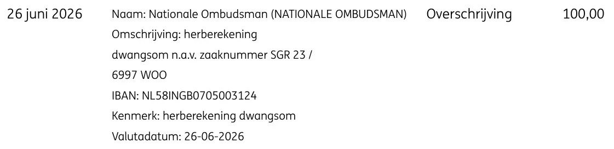

Bewijsstuk · Bankafschrift
De nabetaling van de dwangsom door de Nationale ombudsman, 26 juni 2026
De passage
“26 juni 2026 · Naam: Nationale Ombudsman (NATIONALE OMBUDSMAN) · Omschrijving: herberekening dwangsom n.a.v. zaaknummer SGR 23 / 6997 WOO · IBAN: NL58INGB0705003124 · Kenmerk: herberekening dwangsom · Valutadatum: 26-06-2026 · Overschrijving · 100,00” De enige transactieregel, met de waarden uit de kolommen Datum, Omschrijving, Type en Bedrag (EUR). Hij loopt over vier kolommen en meerdere tekstregels; hierboven zijn die aaneengeschreven, met een middenpunt bij elke veldovergang.

Waarom dit document telt
Dit bankafschrift toont een overschrijving van € 100 door de Nationale ombudsman. Het bedrag werd op 26 juni 2026 bijgeschreven met de omschrijving “herberekening dwangsom” in zaak SGR 23 / 6997 WOO. Het essay stelt dat de Nationale ombudsman de dwangsom verkeerd berekende en de fout pas corrigeerde nadat Giltay in juni 2026 had aangekondigd naar de civiele rechter te stappen; de ombudsman erkende de fout op 11 juni 2026, drie dagen na die aankondiging. Hier werd die erkenning, 28 maanden na de eerste betaling, geld.
Herkomst
- Document
- Transactiedetails uit een bankafschrift (Details af- en bijschrijving)
- Afgegeven door
- ING, Nederland
- Van
- Nationale Ombudsman (NATIONALE OMBUDSMAN), IBAN NL58INGB0705003124
- Aan
- E.F. Giltay
- Datum
- 26 juni 2026, valutadatum 26-06-2026
- Bedrag
- EUR 100,00, geboekt als overschrijving
- Onderwerp
- Omschrijving ‘herberekening dwangsom n.a.v. zaaknummer SGR 23 / 6997 WOO’, met het kenmerk ‘herberekening dwangsom’
- Zaaknummer
- SGR 23 / 6997 WOO
- Voetregel
- ‘Aan de inhoud van dit document kunnen geen rechten worden ontleend’
- Taal
- Nederlands
- Pagina’s
- 1
- Bron
- Afschrift op dedoofpotgeneraal.
nl/ doc/ nabetaling.pdf - Zie ook
- Rechtbank Den Haag, uitspraak van 27 december 2023 (ECLI:NL:RBDHA:2023:20409)ING-bankafschrift, dwangsom betaald door de Nationale ombudsman, 16 februari 2024Nationale ombudsman aan Giltay, 28 februari 2024Nationale ombudsman erkent de rekenfout in de dwangsom, 11 juni 2026
Aangehaald in: het essay ‘Het verbod viel, het boek bleef overeind’ in het hoofdstuk (9) ‘Voorgoed vastgelegd’.
Bewijsstukpagina: https://
Document: https://
Laatst gewijzigd 27 juni 2026, geraadpleegd 3 oktober 2026.

Deze pagina is een bewijsstuk bij het boek De doofpotgeneraal van Edwin Giltay en de bijbehorende website.